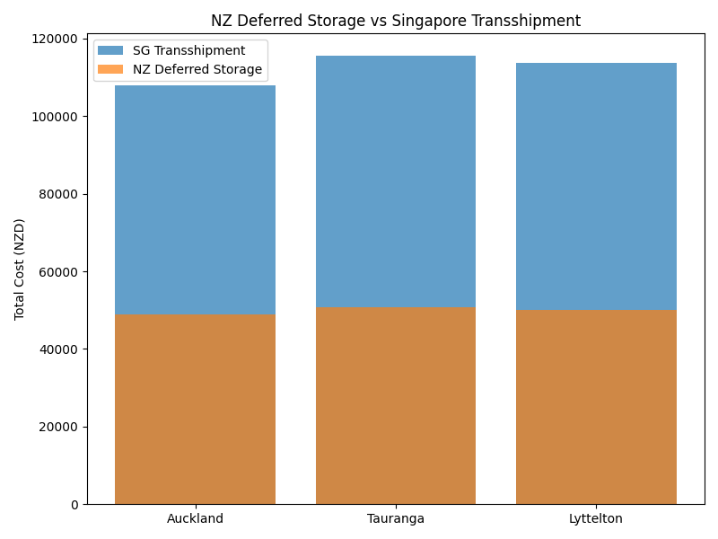

Updated 2025-11-01
| Port | Containers | Deferred_Days | NZ_Storage_Cost | Transshipment_Total | Savings_vs_Transshipment |
|---|---|---|---|---|---|
| Auckland | 60 | 7 | 48900 | 108000 | 59100 |
| Tauranga | 70 | 5 | 50750 | 115500 | 64750 |
| Lyttelton | 65 | 6 | 50050 | 113750 | 63700 |
Data sources: PortConnect, Ports of Auckland, OpenFreightData.
Yard cost: 45 NZD/day • Truck: 320 NZD • Wharf: 180 NZD